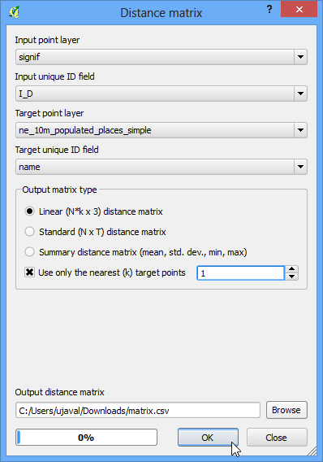
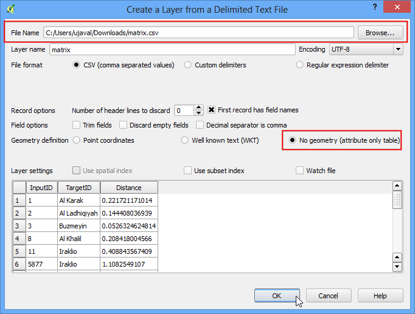

Começando a Programar com o Phyton
O QGIS tem uma interface de programação poderosa que lhe permite estender a funcionalidade principal do software, bem como escrever scripts para automatizar suas tarefas. O QGIS suporta a linguagem de script Python popular. Mesmo se você for um novato, aprender um pouco da interface de programação Python e QGIS lhe permitirá ser muito mais produtivo no seu trabalho. Este tutorial não assume qualquer conhecimento prévio de programação e destina-se a dar uma introdução à criação de scripts python em QGIS (PyQGIS).
Visão geral da tarefa
Vamos carregar uma camada vetorial de pontos que representa todos os principais aeroportos e usar o python scripting para criar um arquivo de texto com o nome do aeroporto, código do aeroporto, latitude e longitude para cada um aeroporto na camada.
Procedimento
No QGIS, acesse . Navegue até o arquivo ne_10m_airports.zip` baixado e clique em :guilabel:`Open`. Selecione a camada ``ne_10m_airports.shp e clique em OK.

Você vai ver a camada ne_10m_airports carregada no QGIS.

Selecione a ferramenta Identify e clique em qualquer um dos pontos para examinar os atributos disponíveis. Você vai ver que o nome do aeroporto, tem 3 algarismos e estão contidas nos atributos name``e ``iata_code respectivamente.

QGIS fornece um console built-in onde você pode digitar comandos Python e obter o resultado. Este console é uma ótima maneira de aprender scripting e também para fazer o processamento de dados rápidamente. Abra o Python Console atraves do .

Você verá um novo painel aberto na parte inferior do QGIS. Você verá um prompt como >>> na parte inferior onde você pode digitar comandos. Para interagir com o ambiente QGIS, devemos usar avariável iface. Para acessar a camada ativa no momento no QGIS, você pode digitar o seguinte e pressione Enter. Este comando obtém a referência para a camada atualmente carregada e armazena na variável layer.
layer = iface.activeLayer()

Há uma função útil chamada dir() no python que mostra todos os métodos disponíveis para qualquer objeto. Isso é útil quando você não tem certeza do quais funções estão disponíveis para o objeto. Execute o seguinte comando para ver quais as operações que podemos fazer sobre a variável layer.

Você verá uma longa lista de funções disponíveis. Por agora, vamos usar uma função chamada getFeatures() que recebe a referência a todas as características de uma camada. No nosso caso, cada recurso será um ponto que representa um aeroporto. Você pode digitar o seguinte comando para percorrer cada um dos recursos na camada atual. Certifique-se de adicionar 2 espaços antes de digitar a segunda linha.
for f in layer.getFeatures():
print f

Como você verá na saída, cada linha contém uma referência a um recurso dentro da camada. A referência ao recurso é armazenada na variável f. Podemos usar a variável f para acessar os atributos de cada recurso. Digite o seguinte para imprimir o iata_code e o name para cada recurso aeroporto.
for f in layer.getFeatures():
print f['name'], f['iata_code']

Então agora você sabe como acessar programaticamente o atributo de cada recurso em uma camada. Agora, vamos ver como podemos acessar as coordenadas do recurso. As coordenadas de um recurso vetorial podem ser acessadas chamando a função geometry(). Esta função retorna um objeto de geometria que pode armazenar na variável geom. Você pode executar a função asPoint() no objeto de geometria para obter as coordenadas x e y do ponto. Se o recurso é uma linha ou um polígono, você pode usar as funções asPolyline() ou asPolygon() . Digite o seguinte código e pressione Enter para ver a coordenadas x e y de cada recurso.
for f in layer.getFeatures():
geom = f.geometry()
print geom.asPoint()

O que se poderia fazer para obter apenas a coordenada x do recurso? Você pode chamar os função x() sobre o objeto de ponto e obter sua coordenada x.
for f in layer.getFeatures():
geom = f.geometry()
print geom.asPoint().x()

Agora temos todas as peças que possamos unir para gerar a saída desejada. Digite o seguinte código para imprimir o nome, iata_code, latitude e longitude de cada uma das características do aeroporto. O %s e %f são maneiras de formatar uma string e número de variáveis.
for f in layer.getFeatures():
geom = f.geometry()
print '%s, %s, %f, %f' % (f['name'], f['iata_code'],
geom.asPoint().y(), geom.asPoint().x())

Você pode ver a saída impressa no console. Uma maneira mais útil para armazenar a saída seria em um arquivo. Você pode digitar o seguinte código para criar um arquivo e escrever a saída nele. Substitua o caminho do arquivo com um caminho em seu próprio sistema. Note que nós adicionamos \n no final da nossa formatação de linha. Este vai adicionar uma nova linha depois de adicionar os dados para cada recurso. Você também deve observar a linha unicode_line = line.encode ('utf-8'). Desde a nossa camada contém algumas características com caracteres Unicode, não podemos simplesmente escrevê-lo para um arquivo de texto. Nós precisamos codificar o texto usando a codificação UTF-8 e, em seguida, escrever para o arquivo de texto.
output_file = open('c:/Users/Ujaval/Desktop/airports.txt', 'w')
for f in layer.getFeatures():
geom = f.geometry()
line = '%s, %s, %f, %f\n' % (f['name'], f['iata_code'],
geom.asPoint().y(), geom.asPoint().x())
unicode_line = line.encode('utf-8')
output_file.write(unicode_line)
output_file.close()

Você pode ir para o local do arquivo de saída especificado e abrir o arquivo de texto. Você vai ver os dados do shapefile aeroportos que extraímos usando python scripting.